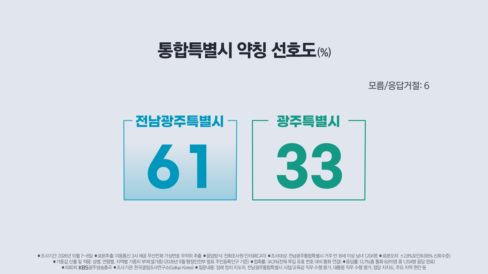
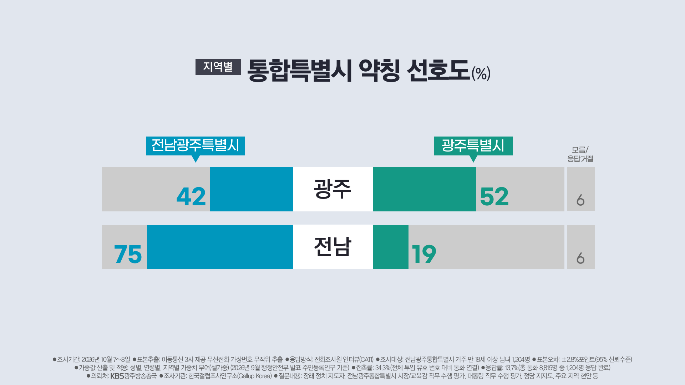
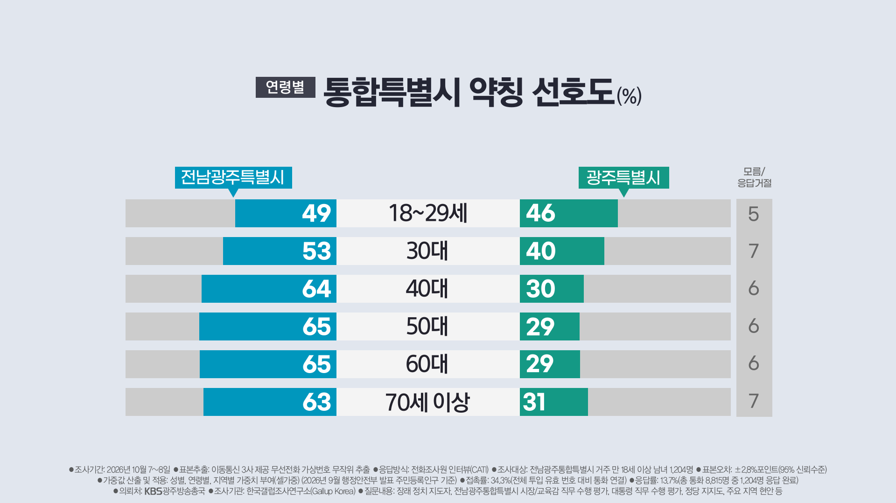

https://n.news.naver.com/article/056/0012272799?sid=100
약칭으로 갈등중



https://n.news.naver.com/article/056/0012272799?sid=100
약칭으로 갈등중
전남광주특별시 < 너무 길다
광주특별시 < 광주 제외 전남이 땅덩어리가 작은것도 아니고 ...
전남특별시 < 이러면 그냥 광주광역시가 해체당한거랑 다를바가 없음
전라남도 , 광주광역시 < 대충 지방이 소멸하니 어쩌니 커져서 예산을 더 타니 모두 특별해져야 한다느니
... 대체 통합 왜 쳐함? 이 짓거리를 전국에서 추진중이고 이딴 말장난으로 지방 소멸을 막겠다고? ㅋㅋㅋㅋ
지금 내 고향 네비 찍으면 '전남광주시 여수시'로 나옴 시안에 시가 있다니 이게 뭔 개소리야?
편익은 좆박고 이리저리 물리적, 사회적 비용만 존나 처먹는 그저 좆병신 행정
심지어 원래 광주였던 지역은 시군 지위를 유지한 다른 시군들이랑 다르게 광주시라는 개념이 특별시한테 흡수당했고 기존 자치구 단위를 그대로 쓰니까 '전남광주시 광산구' 이러고 있음.. 의도했는진 몰라도 결과적으로 겉모습은 이미 전남한테 광주가 흡수당한 꼴임
걍 돈 더 쳐받으려는 온몸비틀기임
이번통합은 이런저런 잡음 들리는거보면
졸속 그자체인것같은....이러다가 통합으로 세금은 베네핏으로 더 받고 몇년뒤 다시 원복하는거아냐?
최대20조 4년동안은 지원금 준다는데
https://www.gjtnews.com/news/articleView.html?idxno=431434
근데 지원금받으면 뭐함 죄다 서부쪽으로 가는데
광주 여순광은 뭐
광주가 전남으로 들어오는건데
그럼 이제 전광시인가
전광통
전광특별시 해라 ㅋㅋ
헉
전남광주시 라고 하면 되지나?
그러면 '특별'하지않아
광남 어떰
전남광주통합특별시에서 통합 뺀다고 이게 약칭이야?ㅋㅋ
전남광주니까 광주의 광 따고 전라도에서 나주의 라를 합쳐서 광라도 어떠냐
근데 광주 해체 당한거 아니냐?
광주 넣을 이유가 없는거 같다
잘 몰라서 하는 말임
전광특별시 가자
저거로 또 얼마 해쳐먹게?
남광시 ㄱ
전남연합 어떰..
근데 광주가 더 대표성이 있지 않나 전남 핵심 도시인데 걍 광주로 가지 뭔 저걸로 기싸움이냐
그냥 경상서도로하자
특별시 못잃네 진짜..
그냥 전광시나 광전시 둘중 하지는 약칭이 왜이리 길어
전남 광주 다 떼고 누리시 우리시 나로시 대한민국시 하면안되나
그냥 전남해 ㅂㅅ들아
세금 더 먹는거말고 무슨 의미가 있나
비빔특별시
전광특 뭔가 부르기 좋음 ㅇㅇ
평누도 의문의 1승
싸울거리 던져 줘서 중앙정치에 신경 못 쓰게 하는 건가... 작전이네 ㅋㅋ
이래도 지방자치제입니까
그냥 “도”의 법적 정의를 “특별자치도” 로 갈음하고 전라남도 퉁하는 게 낫겠다. 전북특별자치도도 걍 전라북도하고. 강원특별자치도도 걍 강원도하고. 행정구역 명칭이 이렇게 지저분해서 쓰겠냐. 어차피 대구경북 부산경남 통합하는 방향으로 간다면 죄다 특별자치도 운운할텐데, 넘 길고 별로 특별하게 느껴지지도 않응개.
모두가 특별해지는 세상
경기도만 빼고
평누도
애들 장난치는 것 같음.
무안한테 광주 여순광 목줄잡혀서 질질 끌려다니는중 ㅋㅋ 씹
광전특별시가 좋은거 같은데..
전광렬 ㄱㄱ
여기서 말하는 약칭은 보통 우리가 시나 도 빼고 앞에 두자리만 말하는건데 그 약칭을 광주전남특별시로 하는건 생각이 있는건가 싶다... 풀네임이 광주전남통합특별시인데 하나도 약칭이 아니잖아
주소는 주소의 역할만 충실히 하는게 좋을거같은데
특별 특례 이런거 다 빼고
한남